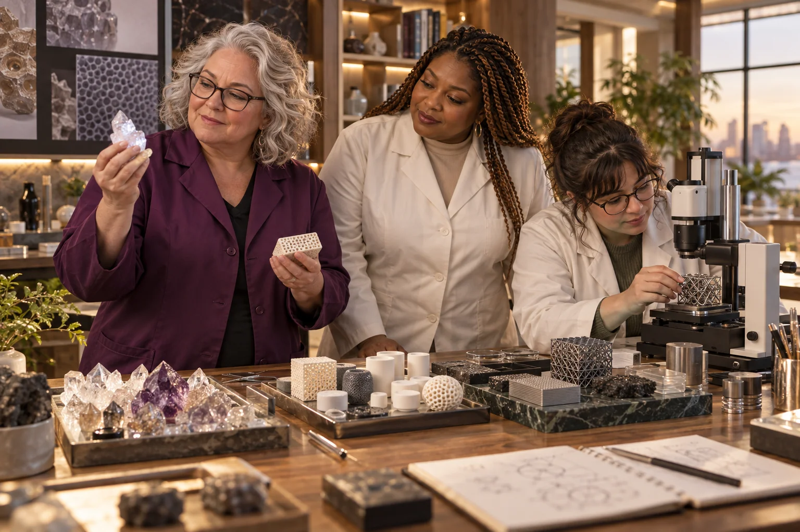

Select an existing supervised system and identify its required operating condition.

500 Queens / Absolute Vacuums
Absolute Vacuums
Translate the ambition of an absolute vacuum into measurable vacuum engineering and leak control.
Follow the connections. Choose your direction.
The need worth working on.
A useful vacuum system is defined by its pressure, cleanliness, leakage and ability to repeat an experiment. 'Absolute vacuum' is an ideal, not a deliverable that this network can promise. Laboratories and specialist makers may instead need better records, fixtures and fault-finding around practical vacuum equipment.
What the enterprise could offer.
Develop a vacuum readiness and troubleshooting service with a qualified technical partner. Start by documenting one existing chamber, its instrumentation and the experiment it supports. The venture's value would be in repeatability and understandable operating records, not an impossible claim of removing every particle.
People to build with
- Research groups with inconsistent chamber behaviour
- Instrument developers preparing a vacuum-dependent prototype
- Technical educators building a supervised demonstration
A chamber with a trustworthy history
Record chamber materials, connections, instruments and maintenance history.
Establish a baseline pressure history using suitable calibrated instruments.
Investigate one known source of leakage or contamination with the technical lead.
Repeat the baseline and document what changed and what remains unexplained.
The first result
A system map, pressure record and maintenance brief tied to one experiment.
What needs to be demonstrated.
Engineering development
The starting evidence
Practical vacuum engineering concerns measurable conditions; the original absolute language is treated as an aspiration.
The open question
The source gives no chamber, target pressure, instrument specification or demonstrated result.
The next measurement
Compare the chamber's pressure history before and after one controlled intervention.
Build the means to deliver.
Useful capabilities and resources
- A qualified vacuum engineer or laboratory technician
- An existing appropriate chamber and instrumentation
- A documented experiment whose needs can be expressed clearly
A possible business model
Proposed inspection, documentation and engineering support fees, with equipment development justified only by repeated customer problems.
A leadership decision to practise
Replace vague extreme-performance language with a measurable acceptance condition that the team and customer can both inspect.
People, consequences and decisions.
- Instrument limits can be confused with the absence of gas.
- Unrecorded material or maintenance changes can invalidate comparisons.
- Specialist equipment and service needs may limit a local market.
If equality were being designed now...
- Can women entering technical trades gain meaningful supervised roles?
- Are maintenance knowledge and patient fault-finding recognised as leadership skills?
Begin with women's own experiences across bodies, ages, cultures and places. Invite disagreement and choose a practical change together.
Create a women-led design brief →Build your learning council.

Build alongside these ideas.
Extreme metamaterialsExtremely Precise Lasers
Make laser precision meaningful by connecting it to a specific measurement or manufacturing task.
Engineering development
Micro-architecturesQuantum Computers
Help people evaluate quantum computing against a specific problem and a fair classical comparison.
Research frontier
Micro-architecturesRubidium Quantum Compute
Create a carefully bounded learning and research pathway into atom-based quantum computing.
Research frontier
Micro-architecturesQuantum Entanglement
Teach quantum entanglement through experiments, assumptions and carefully bounded claims.
Research frontier
Follow existing public concept work.
Connected public conceptExtreme Matter Atlas
Explore elements, crystals, metamaterials and frontier ideas through quantities, mechanisms and the nearest working technology.
From the original suggestion to a working brief.
Developed from original enterprise 68 in the 500 Queens VC NEW Long presentation (slide 17) and the planning document (page 8). This expanded brief is a proposed development path, not evidence of an operating venture or a confirmed partner.
Original title: Absolute Vacuums. The pilot, business model and learning connections on this page are proposed developments of that original idea.